El Deportivo , del que muchos dudaban que pudiera ganar la Liga tras su mal comienzo de año , demostró que sigue siendo un firme aspirante al título con una goleada sobre el Real Madrid ( 5-2 ) que le sirve para aumentar su ventaja al frente de la tabla.
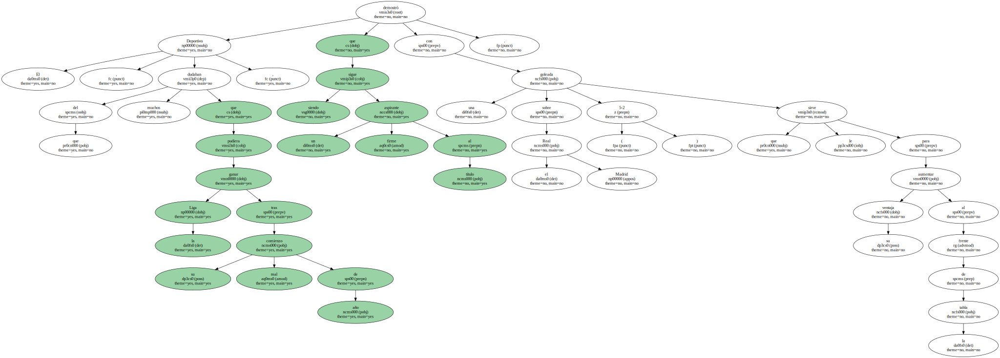El equipo de Javier Irureta cuenta ahora con cuatro puntos de ventaja sobre el Zaragoza , que empató frente al Atlético de Madrid ( 2-2 ) en el Vicente Calderón , y ya tiene a cinco a un FC Barcelona que fracasó en el Nou Camp ante el Alavés ( 0-1 ).
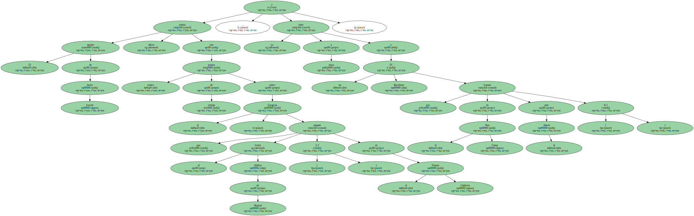La cuarta plaza sigue en poder del Celta , pero el equipo vigués continúa su marcha cuesta abajo y , tras caer derrotado ante el Rayo Vallecano ( 1-0 ) , está a ocho puntos del Deportivo , la misma distancia que separa del liderato a Alavés y Athletic de Bilbao.
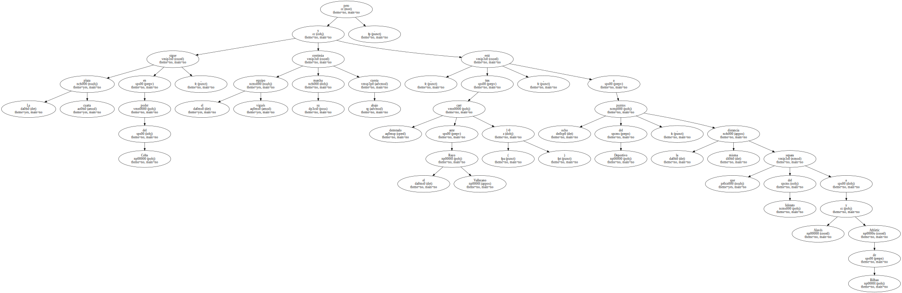El Real Madrid , aunque ha disputado un partido menos , vuelve a ver desde muy lejos al Deportivo.
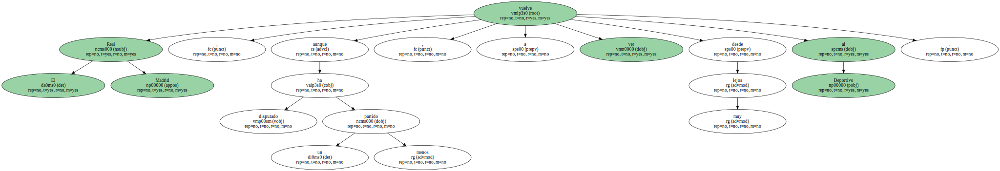Los hombres de Vicente del Bosque tienen diez puntos menos que el equipo de Javier Irureta.
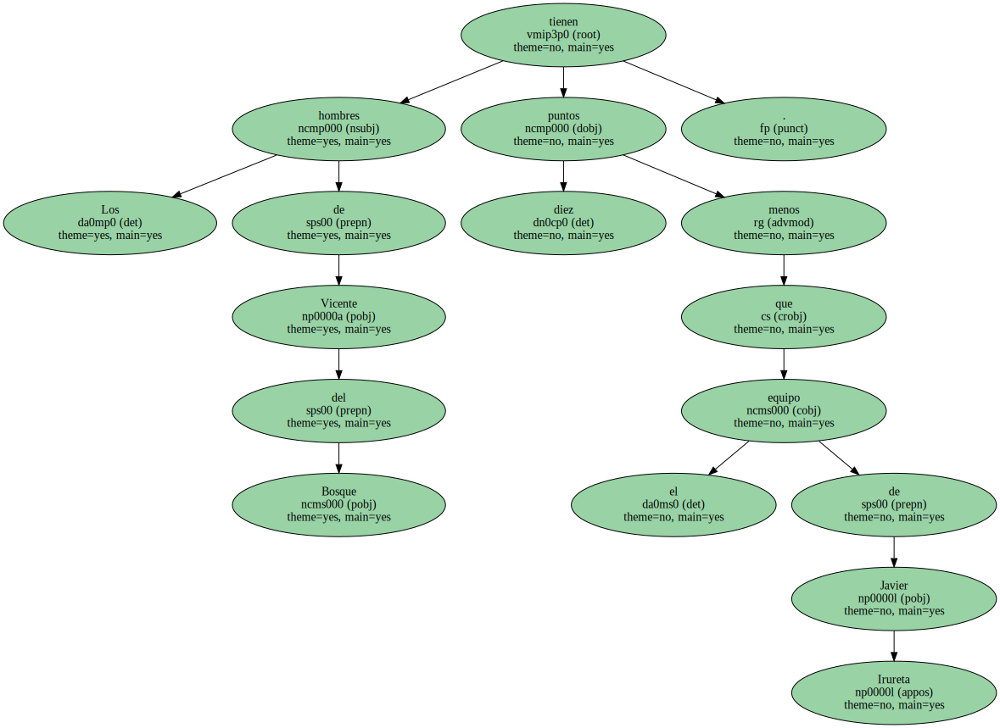En la parte baja de la tabla , Sevilla y Real Sociedad continúan en zona de descenso y esta jornada se les ha unido el Racing de Santander.
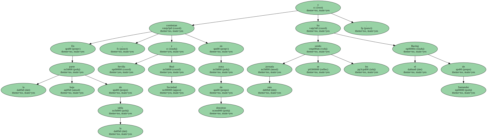RIAZOR FUE OTRA VEZ SINÓNIMO DE DESASTRE PARA EL REAL.
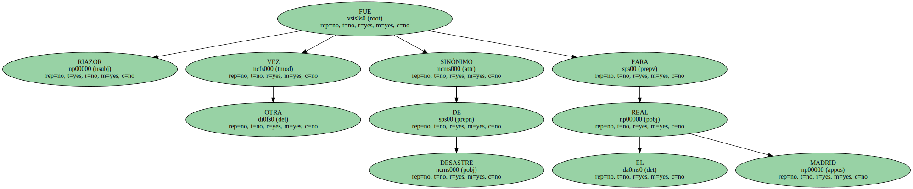El Real Madrid , que llevaba quince partidos consecutivos sin perder entre Liga , Copa y Mundial de clubes , sufrió una espectacular goleada ( 5-2 ) frente al Deportivo en Riazor , un estadio que desde hace años suele ser sinónimo de desastre para el equipo blanco.
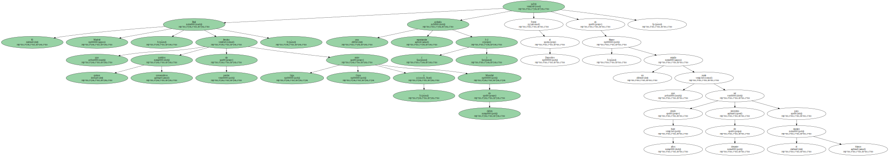La última victoria madridista en La Coruña data de la temporada 91-92 ( 0-3 ).
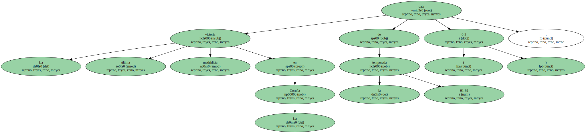Desde entonces sólo ha conseguido tres empates en el feudo del Deportivo y ha cosechado cinco derrotas.
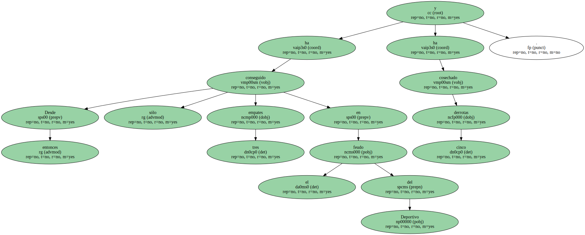Además de la de hoy , dos veces perdió por 4-0 , una por 3-0 y otra por 3-2.
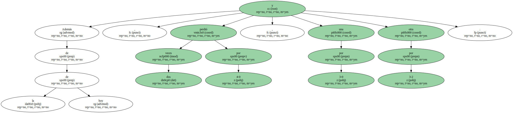PRIMERA VICTORIA DEL ALAVÉS EN EL CAMP.
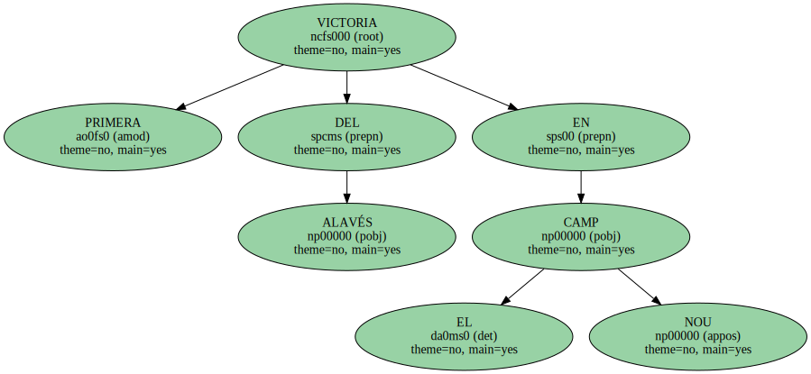El Alavés consiguió esta tarde el primer triunfo de su historia en el Camp Nou en siete visitas ( 0-1 ) , un año después de que el FC Barcelona le arrollara por 7-1 , puntuó a domicilio por quinta vez consecutiva y se consolida en la zona alta de la tabla.
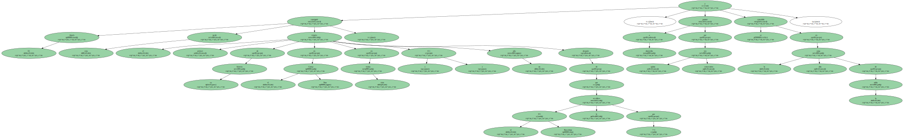El equipo vitoriano asciende al quinto puesto de la clasificación a costa de un FC Barcelona que , después de siete jornadas sin perder , sufrió su séptima derrota en la presente Liga y la segunda en casa.
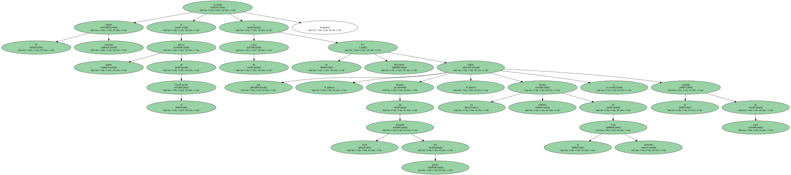El equipo vitoriano asciende al quinto puesto de la clasificación a costa de un FC Barcelona que , después de siete jornadas sin perder , sufrió su séptima derrota en la presente Liga y la segunda en casa.
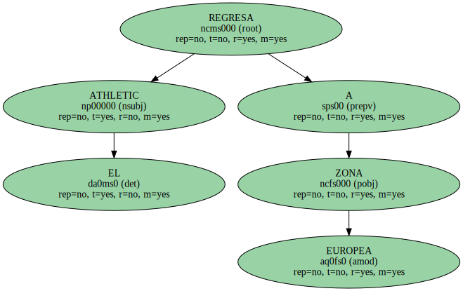El equipo vitoriano asciende al quinto puesto de la clasificación a costa de un FC Barcelona que , después de siete jornadas sin perder , sufrió su séptima derrota en la presente Liga y la segunda en casa.
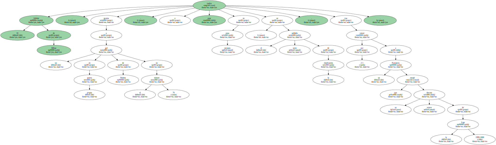El equipo vitoriano asciende al quinto puesto de la clasificación a costa de un FC Barcelona que , después de siete jornadas sin perder , sufrió su séptima derrota en la presente Liga y la segunda en casa.
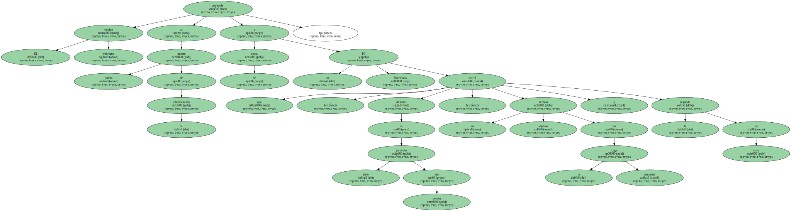EL ATHLETIC REGRESA A ZONA.
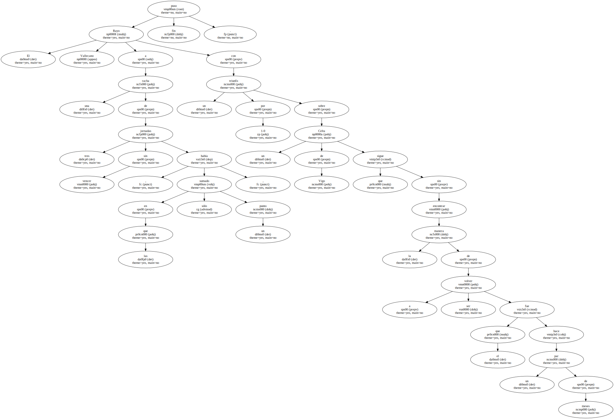El Athletic de Bilbao , gracias a un gol en propia puerta de Pacheta en el minuto 76 , vuelve a estar en zona europea , en el sexto peldaño de la clasificación , tras vencer por 2-1 a un Numancia que encajó su octava derrota de la Liga 1999-2000.
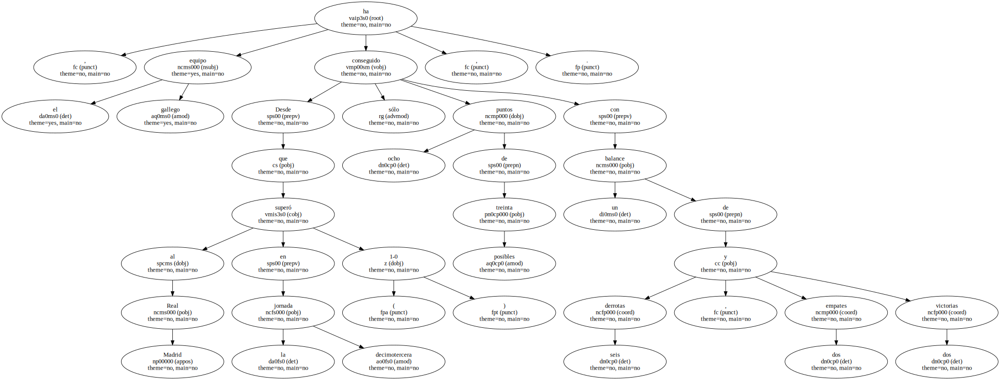EL RAYO PONE FIN A SU MALA RACHA Y AGRAVA LA CRISIS DEL.
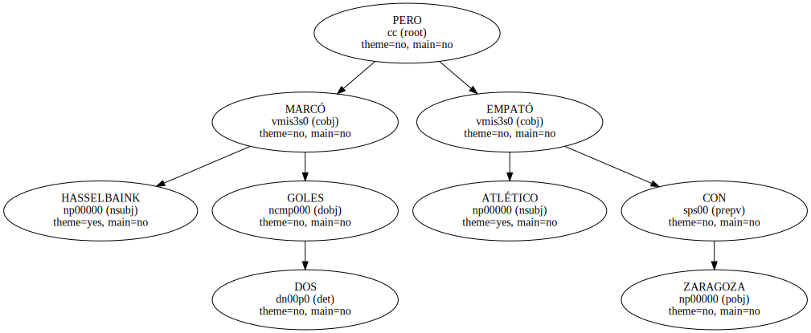El Rayo Vallecano puso fin a una racha de tres jornadas sin vencer , en las que sólo había sumado un punto , con un triunfo por 1-0 sobre un Celta de Vigo que sigue sin encontrar la manera de volver a ser el que fue hace un par de meses.
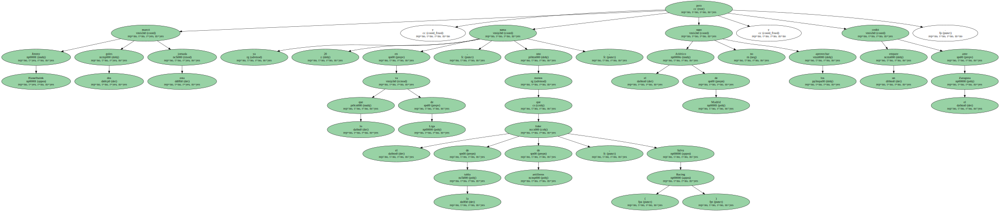Desde que superó al Real Madrid en la decimotercera jornada ( 1-0 ) , el equipo gallego sólo ha conseguido ocho puntos de treinta posibles , con un balance de seis derrotas , dos empates y dos victorias.
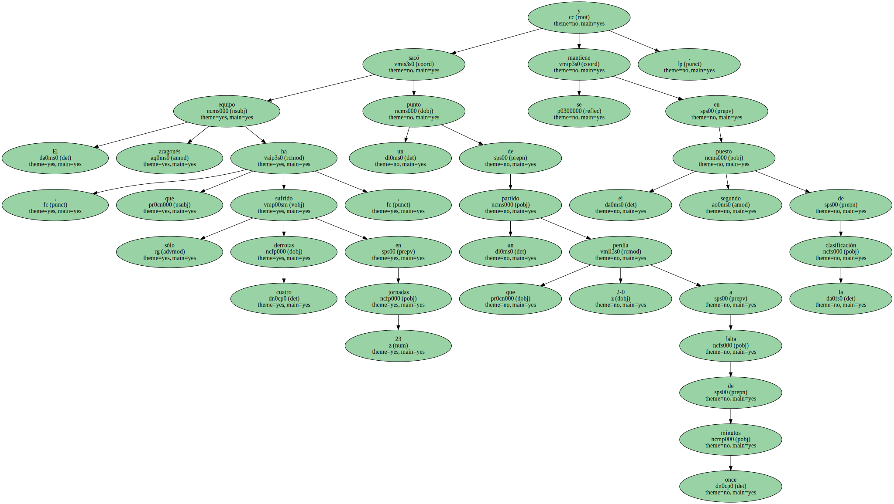HASSELBAINK MARCÓ DOS GOLES PERO ATLÉTICO EMPATÓ CON.
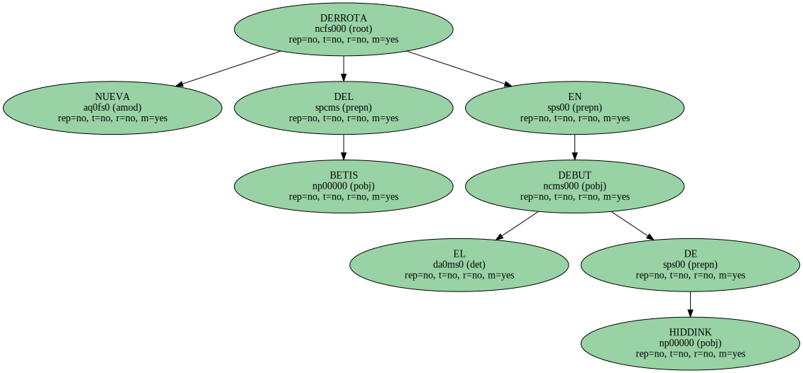Jimmy Hasselbaink marcó dos goles esta jornada y ya suma 20 en lo que va de Liga , uno menos que el líder de la tabla de artilleros , Salva ( Racing ) , pero el Atlético de Madrid no los supo aprovechar y cedió un empate ante el Zaragoza.
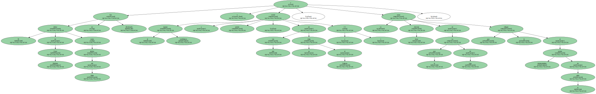El equipo aragonés , que sólo ha sufrido cuatro derrotas en 23 jornadas , sacó un punto de un partido que perdía 2-0 a falta de once minutos y se mantiene en el segundo puesto de la clasificación.
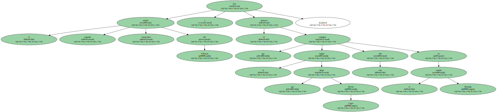NUEVA DERROTA DEL BETIS EN EL DEBUT DE.
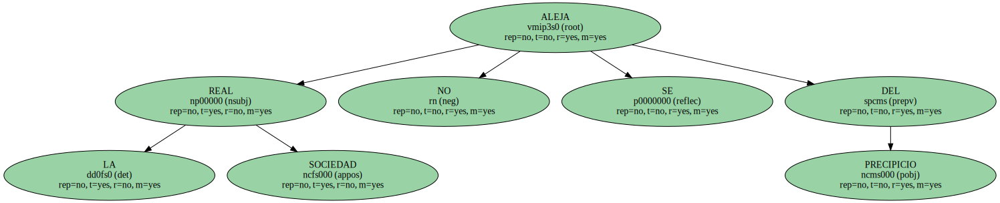El debut de Guus Hiddink como técnico del Betis no fue afortunado y el equipo verdiblanco volvió a perder , esta vez en su visita al Valencia ( 3-1 ) , y ya suma doce derrotas en lo que va de Liga que le relegan al decimoséptimo puesto de la tabla.
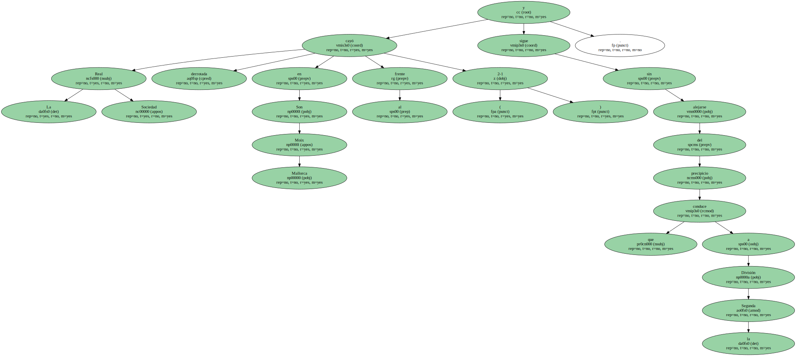Fue el segundo triunfo consecutivo del Valencia y el primero que consigue el equipo que dirige Héctor Cúper este año en el estadio Mestalla.
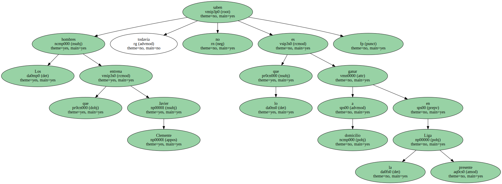LA REAL SOCIEDAD NO SE ALEJA DEL.
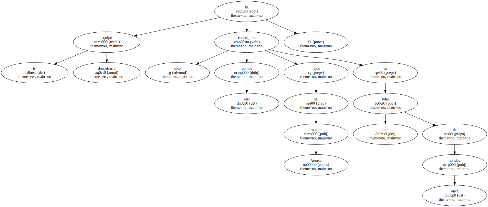La Real Sociedad cayó derrotada en Son Moix frente al Mallorca ( 2-1 ) y sigue sin alejarse del precipicio que conduce a la Segunda División.

Los hombres que entrena Javier Clemente todavía no saben lo que es ganar a domicilio en la presente Liga.
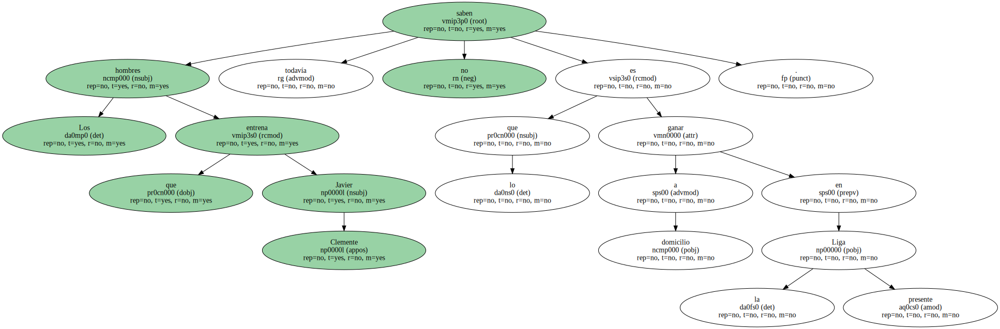El equipo donostiarra sólo ha conseguido seis puntos lejos del estadio Anoeta en un total de once salidas.
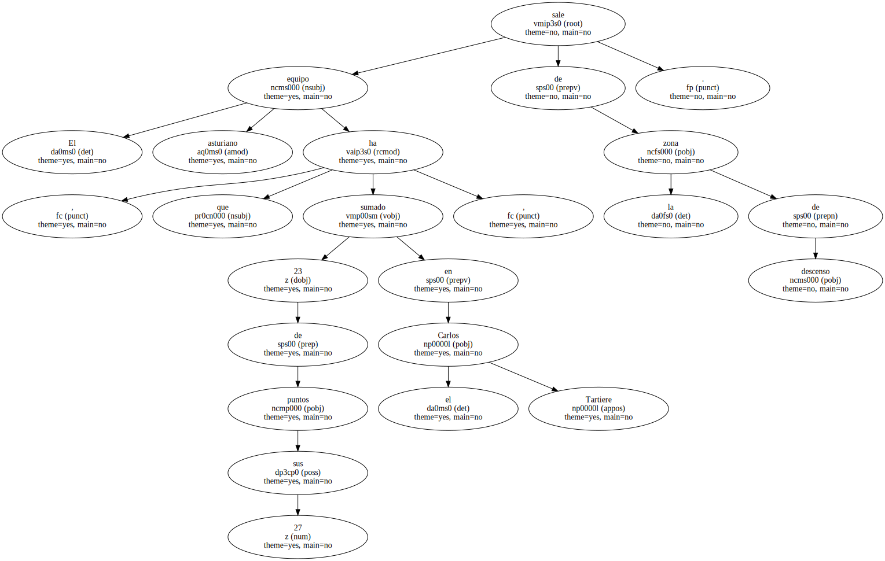PRIMERA DERROTA DEL ESPANYOL CON PACO FLORES COMO.
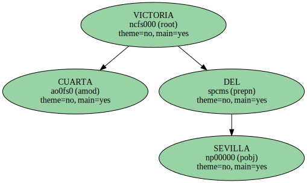El Oviedo , gracias a un gol de Rubén , consiguió una victoria de oro ( 1-0 ) a costa del Espanyol , que no había perdido ninguno de los cuatro partidos - dos de Liga y dos de Copa - disputados hasta ahora con Paco Flores como técnico.
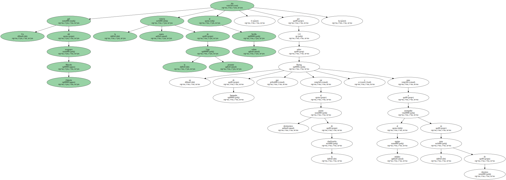El equipo asturiano , que ha sumado 23 de sus 27 puntos en el Carlos Tartiere , sale de la zona de descenso.
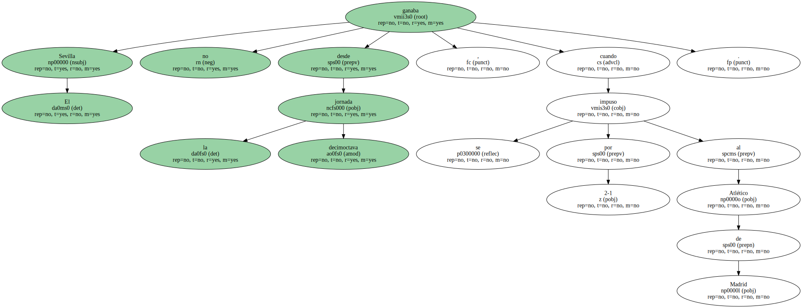CUARTA VICTORIA DEL.
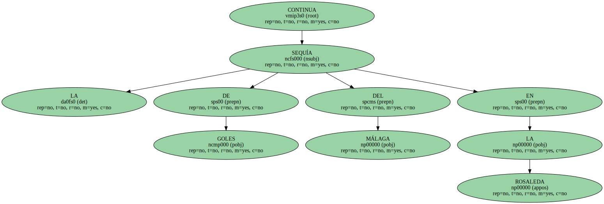Un gol del uruguayo Marcelo Zalayeta dio la cuarta victoria de la presente Liga al colista Sevilla , por 1-0 sobre un Racing de Santander que cae al decimoctavo puesto de la clasificación y pasa a acompañar al equipo andaluz en la zona de descenso.
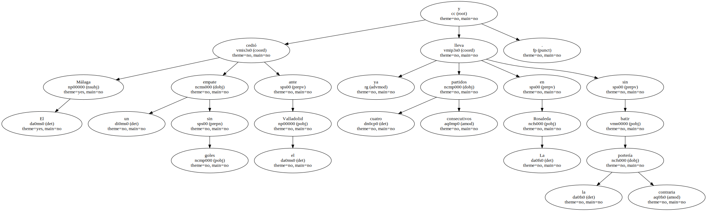El Sevilla no ganaba desde la decimoctava jornada , cuando se impuso por 2-1 al Atlético de Madrid.
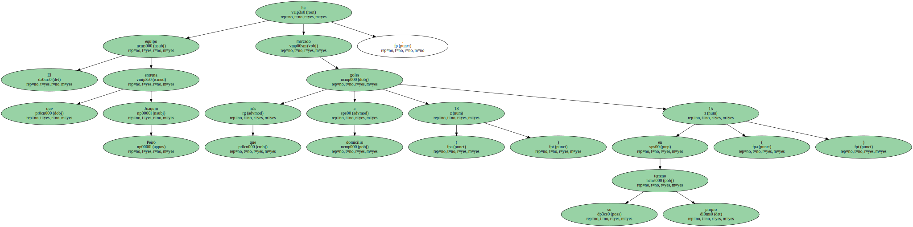CONTINUA LA SEQUÍA DE GOLES DEL MÁLAGA EN LA.
El Málaga cedió un empate sin goles ante el Valladolid y ya lleva cuatro partidos consecutivos en La Rosaleda sin batir la portería contraria.
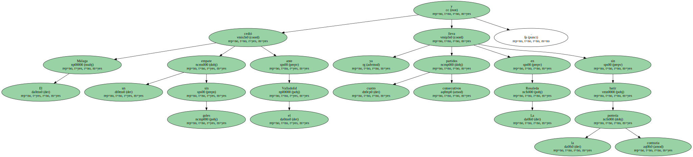El equipo que entrena Joaquín Peiró ha marcado más goles a domicilio ( 18 ) que en su propio terreno ( 15 ).
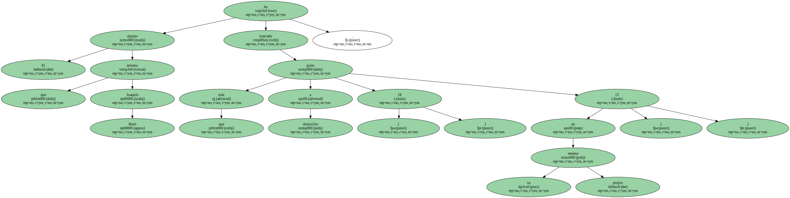